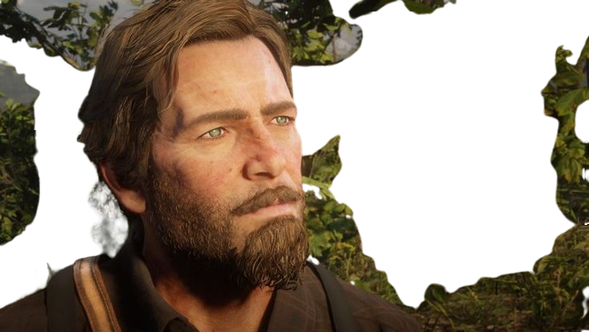

Arthur Morgan
is a cold, brooding outlaw who often resorts to violence and has very few qualms about killing. At his worst Arthur could be extremely ruthless and completely unsympathetic to the people he hurts. Despite being capable of committing such violence, Arthur does have a playful side to his personality that comes out around those he is friendly with. He isn't above joking or employing sarcasm with his friends. Notably Arthur was kind and polite to John Marston's then-four-year-old son, Jack, having a gentle demeanor around the young boy in contrast to his threatening persona. Despite his ability to commit great acts of violence Arthur has his own moral code and doesn't believe in what he deems as unnecessary killing, especially if it endangers himself or those he cares about. Dutch also raised Arthur to believe that revenge is a fruitless endeavor. It seems that Arthur strictly believes that violence should be cold, necessary and without feeling, never out of personal enjoyment or without reason. Arthur cannot be bought, bullied or intimidated, regardless of an antagonist's size, strength, wealth or power. He is fully self-aware of his imposing nature and the effect that his own force of intimidation can have on others. Although Arthur demonstrates time after time that he fears no man, he does fear for the safety of those he cares about. Supremely confident in his ability to handle any situation or overcome any adversary, Arthur rarely shows any hesitation and will engage in combat even when outnumbered. Despite Arthur's usual bravery and calm demeanor, he does display a rare moment of fear when he confides in Sister Calderón, revealing to her that he is afraid of his own impending death as a result of his terminal illness.
